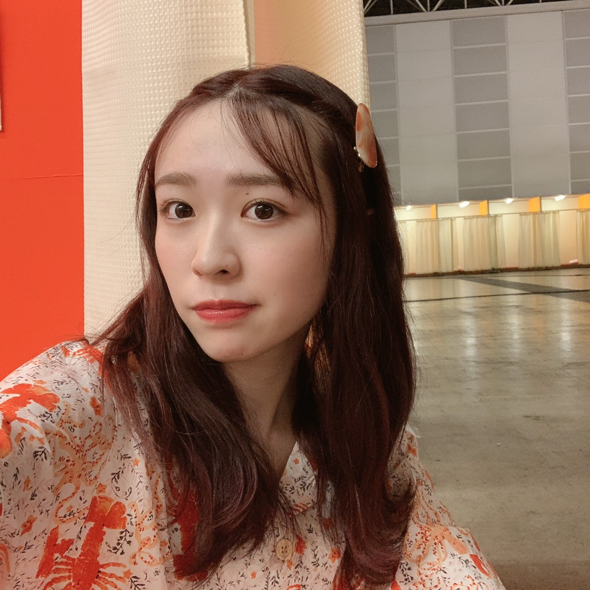
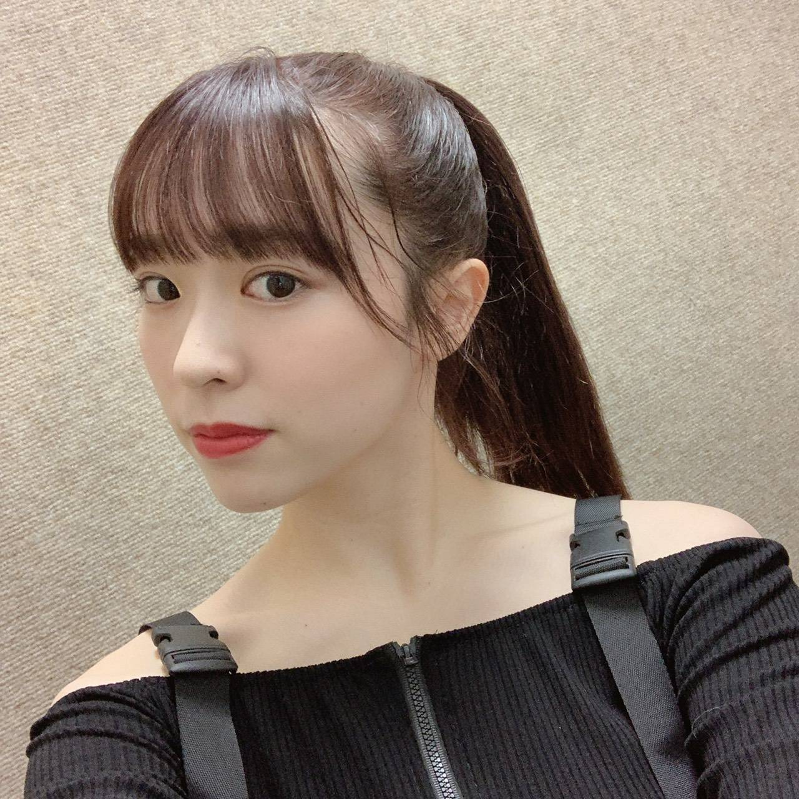

2020/0622Mon革命の馬
46時間、無事全員で駆け抜けられました。
見て下さった皆様本当に有難うございました！
ああ〜そういえば個人的に嬉しかった事が。
麗乃ちゃんの電視台に少しだけ
出演させてもらったんだけれども、
麗乃ちゃんがアンケートに出て欲しい人って
いうので私の名前を挙げてくれていたらしく。
実は私も、もしツーショットトークするなら
誰と話したい？ってなった時に
麗乃ちゃんの事を書いていたから
余計に嬉しくなっちゃいましたね〜
ありがとう麗乃ちゃん！

日奈子とお揃いで購入してあった
ロブスターパジャマ
オクトパスもいますよ〜
2期生企画もみんなで話し合って
お揃いのパジャマにして
みんなでいつもしないような明るい感じの
髪型で遊ばせて深夜テンションで騒いで
私の大好きな2期生が詰まってました。
もっと色々やりたかったけど
時間が足らなかった、、、
私の電視台では
『46時間ダンス完コピチャレンジ！』
やらせて頂きました！
振り付けは私の友達でもあり先生でもある
アベカホにお願いをしました。
革命の馬も私が選曲しました！
出演時間やその他諸々動いていて
本当8時間くらいしか練習時間がなくて
私もダンサーの友達もかなり焦っていました。
本当に本番中にフリーズしちゃう可能性も
あるなあと考えながら、、笑
アクロバットは体調面を考えて
違う振り付けに急遽変更させて頂きました。
完璧をお見せ出来ず申し訳ありません、、
なんかもう終わった今もボケーっと
してしまうくらい本気で望んで
集中してきたものだから何を書けばいいか
全く思い浮かばず申し訳ないです、、
今の身体の状態をみて
満身創痍ってこの事を言うんだろうなって
自分で思ってます(笑)
この企画で皆様を少しでも元気付けられたのならば
私はとても嬉しいです、、

かりんちゃんからも、井上の小百合からも
連絡が来てすんごく嬉しかったなあ
近くで見ていてくれたまいちゅん、
梅座右衛門、でんぷんの3人は
私が見てほしいって思った3人を選ばせて
頂きました！来てくれて本当にありがとう。
この3人は普段から私のダンスを物凄く
褒めてくれるんです。
だからこそ見て欲しかったから
休憩する時間削ってまで駆けつけてくれて
本当に感謝です、、
終わった後、本当に沢山のメンバーから
激励の言葉を貰って
みんなが私の電視台を見てくれていた嬉しさや
練習中も気遣ってくれていた姿を
肌で感じて、更に乃木坂のみんなが
大好きで尊くなりました。
寝ずに46時間TVを作り上げて下さった
スタッフの皆様、
そして応援して下さっていたファンの皆様
本当に有難うございました！！
今日はゆっくり休む！笑
みり愛
2020/06/22 20:30


コメント(990)
そうめん&タコさんをあむあむあむ[壁]ｴ＿)
花柄のお洋服を着た渡辺殿きゃわわうれぴーぽーo(￣◎￣)o ﾊﾞﾌﾞｩ♡
コーヒー牛乳をあむあむあむ[壁]ｴ＿)
ほんじつもるなぴホットケーキパワー100万馬力でばいころまる( ;-(ｴ)-)ゞｸﾏｯﾀﾅｧ…
モバメいつもありがと！
ダルゴナコーヒー妹がめっちゃ飲んでるよ！
コーヒーを泡立てて牛乳の上に入れるやつだよね
コーヒーをもったりするまで泡立てるんだけど、何の前触れもなく全力でガシャガシャやり始めるからめっちゃびっくりするんだよね笑
ボウルを逆さまにしても落ちないぐらいまでやっててめっちゃ大変そうだった！
8年前と食の好みが変わらないのはすごいね
俺は部活引退してから結構食べる量減ったんだよね
それに伴って好みも結構変わってきてて、最近和食の美味しさに気づき始めた！
ベーシックな朝ごはんが最高に美味しいなって思って、急に年取った感じがしてる笑
昔の本だしのCMで小栗旬さんが朝食食べてるのがめちゃくちゃ美味しそうで、YouTubeで何回も観てる笑
握手会どうなるんだろうね
他のグループはオンラインお話会とか決まったりしてるみたいだけど、乃木坂は規模が大きいから大変なのかな？
今年は出来るだけたくさん行きたいと思ってたから、会いに行く機会がないのはつらいな〜
イベント再開されるの楽しみにしてるね！
また感染者増え始めてるから、体調には気をつけて仕事頑張ってね！
またコメントするね〜
お着物を着た渡辺殿きゃわわうれぴーぽーo(￣◎￣)o ﾊﾞﾌﾞｩ♡
みたらし団子をあむあむあむ[壁]ｴ＿)
ほんじつも鉄火丼パワー100万馬力でばいころまる( ;-(ｴ)-)ゞｸﾏｯﾀﾅｧ…
お久しぶり！
最近コメント出来てなかったです、、
私のコメントが、
みり愛ちゃんの笑顔につながったり、頑張ろうって思ってくれてたりしたらすごく嬉しいです( ¨̮ )
気づいたらもう7月だねっ
7月は七夕がありますね⸜❤︎⸝
何をお願いするのかな？？
私は、乃木坂46のメンバー全員の健康と…
あとは秘密です。！
お願いと言ったら、乃木神社で馬絵にお願い書いたな~
もう結構前だ！
また行きたいな♪
おやすみなさい✩.*˚
こっちゃん❦
今年のみり愛さんの成人式の頃はまだ普通の日常だった事も含めて懐かしく思えますね！
今頃は長い夏の全国ツアーが口火を切る時期でしたし、
チケット争奪戦に苦心していたのが嘘かのように、久々に静かな7月を迎えました
今年の夏はやはり少し変わった夏になりそうです！
段階的自粛緩和に反比例して気を緩められない中ではありますが、
3ヶ月ぶりに人の少ない日中にスーパー銭湯に行きました
自分は源泉掛け流しの湯船好きなので（笑）みり愛さんのように岩盤浴はしないのですが…
施設にもよるでしょうけど検温と休憩スペースでのマスク姿がスタンダードだったんですよね
日課だった事に久々に触れると、慣れつつあった”新しい生活様式”というのを肌で感じました
回る寿司なんかも久々に行きましたけど、座席間隔はきっちり新しい生活様式でしたね～
ワサビを捻り出している時にふと、いつぞやかのみり愛さん、
醤油に溶いてワサビ量ハンパじゃなかったなぁ、と思い出したのは秘密です（笑）
ところで、20歳になった事だし（今更感？）また新たに自己紹介してみてはどうですか！？
加入当初と比べて、変わったこと、変わっていないことなどあるでしょう。
人参も嫌いなので、ミックスベジタブルとか
地獄ですね
雨が大変なことになってますね
このたびの災害により被災された方々
ならびにそのご家族の皆様に
心よりお見舞い申し上げます
皆様の安全と被災地の一日も早い復興を
心よりお祈り申し上げます
東京は大丈夫ですか？
西日本は猛烈な大雨と暴風です
外出する際は
くれぐれもお気をつけくださいね
みり愛今日も1日お疲れ様！
今週は仕事で外出予定が多いんだよね〜
今日もさっそく仕事で外出してたよー
基本は在宅勤務だけど、たまに出勤する流れは相変わらず
実は、ちょうど昨日ケーキを食べたんだ〜
弟の誕生日が近かったからね
モンブリャンではなかったけど笑
モンブリャンって聞くと、宇宙兄弟の猫舌showroomを思い出した！
また宇宙兄弟の猫舌showroom 見たいなー
明日も朝早いから、早く寝ないとだ
またコメントするねー
体調大丈夫？
今日は早く寝て、ゆっくり休んでください
今日は私も早く寝よっと。
みり愛ちゃんも良く寝て、
エネルギーを補充してください！！
お休みなさい。
モバメ毎日ありがとうです。
スッピン写真も着物写真も、
どの写真も、綺麗で可愛いい！
本当っ、癒されてます。
雨がずっと、続いてますね。
暑いのも辛いけど、早くやんでほしいなあ。
体調、大丈夫ですか。
ゆっくり休んで下さいね。
無理せず、しっかり治しましょう。
んでは、おやすみなさい。
モンブラン渡辺殿きゃわわうれぴーぽーo(￣◎￣)o ﾊﾞﾌﾞｩ♡
チャーハンをあむあむあむ[壁]ｴ＿)
ほんじつもるなぴホットケーキパワー100万馬力でばいころまる( ;-(ｴ)-)ゞｸﾏｯﾀﾅｧ…
みり愛おはよー
今日は七夕だね！
みり愛は願い事あるのかな？？
俺は早く握手会でみり愛とか日奈子に会えますようにしかない！笑
みり愛は少し体調崩してるみたいだから、今日は治ってるといいな〜
またコメントするねー
梅雨とはいえ、雨が降ったりやんだり
鬱陶しいね(><)
湿気も強くて体調管理も難しいよね
僕はここのところ寒い思いをしながら起きるのが続いてて体調もあまりよくない(;;)
みり愛ちゃんも体調崩してるみたいだけどあまり無理しないでね。
九州では災害クラスの大雨が続いていて心配だけど、これからの時期、どこにいても気をつけなければならないね。
避難勧告が出たので学校はお休みでした
近所の川が土砂混じりの濁流になってて
怖かったよ〜((((；ﾟДﾟ))))
そちらは大丈夫でしたか？
自然の力って恐ろしいね(￣□￣；)
今日も一日お疲れさまっ！
今日は大雨のせいで
臨時休校だったよ〜
今まで生きてきて
初めて雨を恐ろしいと思いました
本当だったら七夕で
ロマンティックなお願いごとするのに
とてもとてもそんな状況では
ありませんでした。。。
だから今日はみり愛ちゃんが
僕の織り姫様になって〜(´д｀)
みり愛今日も1日お疲れ様！
今日は会議もあったりで、疲れたな〜
やっぱり電車通勤があると疲れが増すね
基本的には在宅勤務だけど、たまに電車通勤すると実感する
今日は七夕だけど、特に何もない1日だったな〜笑
またコメントするねー
こちら大雨でーす！
今日は七夕なのに(´・ω・`)
でもこんな土砂降りじゃあ
織姫様も彦星様も今年は
会わない方がいいね
濁流に飲み込まれちゃうよ
会えない時間が愛を育てるって
言うじゃない？
みり愛への愛も日に日に募ってまーす！
それでは、お休みなさい
今日は七夕ですね✩.*˚
私の願いはね、
やっぱり乃木坂46全員の健康だな( ¨̮ )
あとはみり愛ちゃんに早く会えますよに*̣̩⋆̩
もしもう1ついいなら、
早くコロナが治まって、世界中のみんなが楽しい日々を送れますよに。かな。
頭が良くなりますように！とか
志望校に合格しますように！とかは
頑張って努力します…！
とにかく早く元の生活に戻れるといいですね(*^^*)
こっちゃん❦
すっぴん渡辺殿きゃわわうれぴーぽーo(￣◎￣)o ﾊﾞﾌﾞｩ♡
明太子フランスをあむあむあむ[壁]ｴ＿)
そういえば7月8日は僕の〇〇〇7歳のお誕生日でござる(o≧▽ﾟ)oニパッ♡
ほんじつもパイナップル丼パワー100万馬力でばいころまる( ;-(ｴ)-)ゞｸﾏｯﾀﾅｧ…
さぁ、今日も一日の始まり
張り切っていこーね！
昨日、大雨で家の裏の山の崖が崩れました
幸い被害はなかったんだけど
ビヒッたわ〜
今日は東京でも雨らしいので気をつけてね
モバメで体調崩してるって言ってたけど大丈夫だった？
仕事始まって疲れもあったのかな？
休みが長いといきなり仕事とか始まったとき結構疲れるよね
休めるときにゆっくり休んでね！
スッピンの写真めっちゃ可愛い！！
ナチュラルが一番っていうのは本当にその通りだと思う！
ニュース見てると雨の被害凄いね
結構範囲広がってるみたいだからみり愛ちゃんも気をつけてね
またコメントするね〜
昨日からモバメで、スッピンやアップの自撮りありがとう！ スッピンも色白で目はパッチリでなかなか可愛いよ
いつ会えるんだろうね(#^.^#)
今日は短いけど、またね(^-^)/
今日も一日お疲れさまでした
今、九州地方を中心に大雨の影響で
甚大な被害がもたらされています
日頃のニュースに着目し
今、日本で世界で何が起きているのか
イマジネーションを働かせて
人の痛みに寄りそえる
人間でありたいと思います
メンバーからいただける
｢心配です｣｢大丈夫ですか？｣
｢元気出していこー！｣
の一言で本当に心が休まります
いつも、ありがとう
新型コロナウイルスについても
まだまだ予断を許さない状況ですね
外出の際にはくれぐれも
お気をつけくださいね
一点を見つめる………ちょっと怖い。笑
じゃあね。
うーん、(￣^￣)
うーん、(￣^￣)
、、、何してるんだろう？
お蕎麦をあむあむあむ[壁]ｴ＿)
綺麗な目の渡辺殿感動ぽっぽぽー壁]ω･U ﾆｬ♡
前髪師匠流しの渡辺殿きゃわわうれぴーぽーo(￣◎￣)o ﾊﾞﾌﾞｩ♡
夏の新アニメ～Re：ゼロから始める異世界生活第2期を視聴しておりまふσ(´∀`●)ｱﾀｼ ♡
ほんじつもウニパワー100万馬力でばいころまる( ;-(ｴ)-)ゞｸﾏｯﾀﾅｧ…
僕は色なら個人的には青系か緑が好きだよー
ただ、人工的でも自然でも色そのものが好きだし、色んな色のお洋服を着てるみり愛ちゃんがみたいなあ！
最近退屈に思えることがほとんどなくて、
自分にとって退屈な時間てどんな時なんだろうってしばらく考えてた(^^;
まあとにかくそういう時ってなんらかの考え事をしてるかもしれない(笑)
じめじめした雨の日が続いて流石にうんざりだけど、梅雨が明けて猛暑の日が訪れるのも嫌。
早く秋がこないかなあ……(笑)
いや、えんじ か。
今日も1日お疲れさまでした
好きな色は赤、水色、薄紫だよ
みり愛は緑？
みり愛もがんばってると思って仕事頑張りました
お互い頑張ったね！偉い！
天気ずっと雨だね
そろそろ晴れて欲しいよ
てか、ツインテールやん！
可愛いぞみり愛♡
では、明日も1日楽しんで生きましょうd(@^∇ﾟ)/ﾌｧｲﾄｯ♪
おやすみりあ☪️
赤色お洋服を着た渡辺殿きゃわわうれぴーぽーo(￣◎￣)o ﾊﾞﾌﾞｩ♡
白目物語が好き好きピーナッツ(ｏ￣∀￣)ﾉ”ぁぃ
鯖をあむあむあむ[壁]ｴ＿)
ほんじつもズッキュン王国パワー100万馬力でばいころまる( ;-(ｴ)-)ゞｸﾏｯﾀﾅｧ…
カッコ良すぎました。
感動をありがとうございました！
本当にお疲れ様でした！
きいちゃんとのお揃パジャマも可愛かった。今までとは違う形の番組作りで自分等が想像する以上に色々大変だったとは思うけど最高の46時間TVでした。ラストの世界中の隣人よ。は泣いた・・・。
コメントする